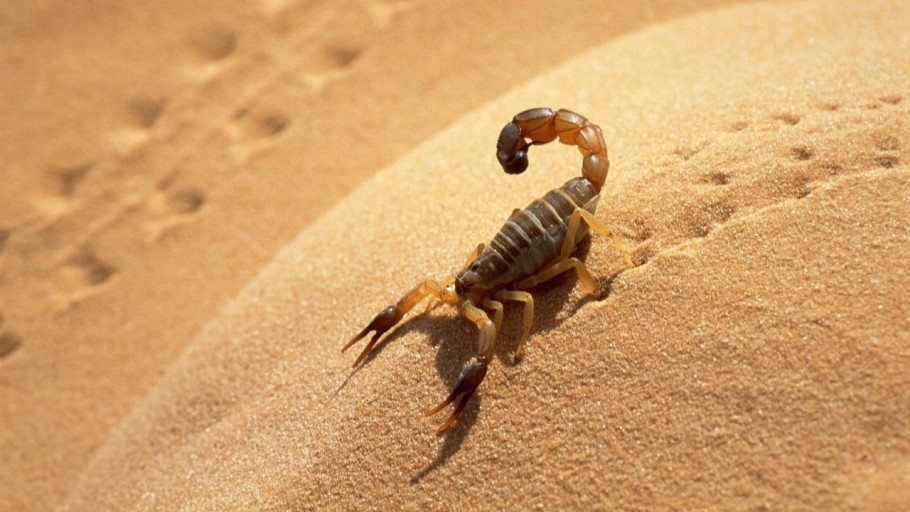

대부분의 전갈은 독을 갖고 있지만 쏘이면 좀 아프기만 할 뿐, 사람에게 크게 해를 끼치지는 않는다. 게다가 건드리지 않으면 일부러 사람을 공격하는 일도 없다. 하지만 약 20종 정도의 전갈은 목숨을 위협할 정도의 강한 독을 가지고 있는데, 이런 독 전갈들은 북아메리카, 북아프리카나 중동의 사막에 살고 있다. 특히 데스스토커 같은 치명적인 독을 가진 전갈의 독침에 찔리면 경련과 호흡 곤란 등을 일으키다가 개는 10분 이내, 사람은 2시간 안에 목숨을 잃는다고 한다. 전갈의 독은 예로부터 중풍이나 신경 마비 등을 치료하는 약으로 사용해 왔고, 현대 의학에서도 계속 연구되고 있다. 전갈 독에 포함된 성분이 종양 세포가 커지는 것을 막아 주어, 뇌종양의 일종인 신경 교종을 치료하는 약이 곧 개발될 것이라고 한다. [네이버 지식백과] 사막의 생물들 (마법전사 호머와 사막의 밤, 2011., 곰돌이 co., 김신중)